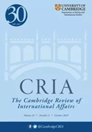
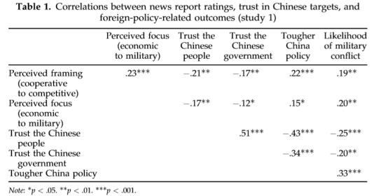
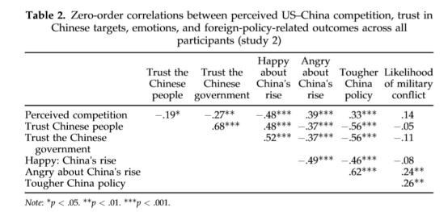

收录于合集

作品简介
【作者】 Peter Gries：葛小伟，曼彻斯特大学中国研究院主任，曼彻斯特大学中国政治专业教授，研究政治心理学。曾出版《美国外交的政治：意识形态怎样分化自由和保守主义者的外交观》、《中国的新民族主义：骄傲、政治和外交》等著作。
Yiming Jing：敬一鸣，中国科学院心理研究所助理研究员，研究社会心理学，从事文化心理学教育。曾在《实验心理学杂志:普通神经科学、社会认知与情感神经科学》、《实验社会心理学杂志》和《跨文化心理学杂志》等多个知名杂志上发表过数篇学术论文。
【 编译】 晋玉
【校对】 邢戎
【审读 】 丁伟航
【排版 】 李佳霖
【 来源 】 Gries, P. , & Jing, Y. . (2019). Are the us and china fated to fight? how narratives of ‘power transition’shape great power war or peace. Cambridge Review of International Affairs. 32(4), 456-482.(apa)
期刊介绍

《剑桥国际事务评论》（Cambridge Review of International Affairs）于1985年创立，是国际关系同行评审学术期刊，以季刊形式发行。由剑桥大学国际研究中心（现隶属牛津大学政治与国际关系学院）编辑，Routledge组织出版。根据2018学术报告显示，影响因子为0.656。
“权力转移”的叙述 如何塑造大国间的战争与和平：中美之间必有一战吗？
Are the US and China fated to fight? How narratives of ‘power transition’ shape great power war or peace
内容提要
中美一定会落入“修昔底德陷阱”——
权力转移必然将会导致大国战争吗？本研究从心理学的角度出发，以普通美国群众为实验对象，借助两个随机的网络实验，通过向受测者播放以积极（positive）或以零和(zero-
sum)两种不同的方式叙述中美权力转移的CNN新闻报道视频，记录受测者在观看报道后产生的对中美两国关系的认知及看法，研究这些认知和看法对战争爆发可能性的影响。两个实验都表明越以
“零和”思维叙事，就越会放大中美之间的竞争，受测者就越容易不信任中国并对中国产生恼怒的情绪，从而希望美国政府对中国采取更强硬的政策。同时第二个实验还表明个体对民族主义和对社会不确定性规避（uncertainty
avoidance）的程度差异可以调节媒体叙事对民众认知所产生的影响。实证结果表明叙事正是连接“权力平衡中的结构变化”和“个体对战争与和平的影响过程”的心理学机制。
**
** 文章导读
一、 引言 ****
2500年前，斯巴达在伯罗奔尼撒战争中打败雅典成为希腊最强的部落。他们之间的冲突是必然（predetermined）的吗？是雅典自身的力量增长打破了其与斯巴达之间的力量平衡从而使战争不可避免吗?还是大国关系的叙事结构（narrative construction）对战争与和平的影响更大? 随着中国的崛起和大量有关中美“权力转移”的国际媒体报道，另一场大国战争极有可能在21世纪爆发。格雷厄姆•艾莉森(Graham Allison, 2015)认为美国和中国很可能会陷入“修昔底德陷阱”(Thucydides trap)，权力转移必将导致大国冲突。美国政界和学术界对中美关系都表现出消极态度。前美国国防部长威廉·科恩认为艾莉森世人敲响了战争爆发的警钟。主流国际关系在构建“权力转移”理论时偏向（1）决定论——认为权力转移必然导致冲突；（2）理性化——假设国家是追求自我利益最大化的理性行为主体；（3）倾向于关注宏观的层面、系统层面的事态变化，通常把国家看作单一主体。本文则着重从心理学的角度出发，使用“人——情境” 法（person by situation）(Ross and Nisbett 2011)探究媒体传播的国际关系叙事如何影响个体和个体间对系统性权力转移（system-level power transitions） 的认知，即着重研究（1）这种影响的不确定性（contingent），（2）形成该影响的心理因素（psychological），（3）该影响从微观、个人层面的形成过程。反过来这可以说明直觉判断（intuitive judgements）和群际情绪如何影响个人的外交政策偏好，这些偏好可能最终决定战争或和平。本文不在将国家视为一个单一的理性行为主体，而是对国家进行再结构，进一步探究意识形态差异和个人性格差异如何调节不同的美国人对不同权力转移叙事（different narratives of power transition）的理解以及在该理解的基础上形成的对华政策偏好。本文将借助两个随机试验，通过控制中美相互依赖的叙事探究普通美国人如何理解这些叙事，这种理解又如何进一步影响他们对中国的信任度和情感，以此所产生的对中国的情感最终又如何影响他们对未来中美关系的预测和对华的政策偏好。同时本文还研究美国人的个体差异何如调节他们对大国关系的系统性变化的反应。根据心理学，修昔底德陷阱代表着恐惧。群际信任和群际情绪有助于研究“对权力转移的认知能否会引发战争”及“权力转移如何产生作用”这两个问题。而权力转移和现实主义理论创造了通过激起群际间愤怒感和不信任感完成自我实现的这样一种叙事。 本文先梳理 “权力转移”“社会互赖”“群际信任”和“群际情绪”的国际关系学及心理学的有关文献。接着文章将通过两个实验验证三个关于对“中美权力转移”的不同叙事的主要、中介和调节效应。最后本文得出结论：不同叙事决定战争与和平。
二、 文献综述 ****
International relations theories and US–China power Transition
国际关系理论和中美权力转移
通过文献梳理，作者得出以下结论：（1）研究热点已经从“中美之间将是否发生权力转移”变为“将会以什么样的方式发生转移”。只有少数学者认为中美间的权力转移将会和平进行；多数学者认为中美权力转移必会发生冲突。（2）现实主义（包括新现实主义、结构现实主义、进攻性现实主义等）、和权力转移理论倾向于权力转移必会发生冲突（deterministic）。但自由建构主义、社会建构主义提到了经济互赖、国际组织等因素能够促进中美合作，为中美和平地实现权力转移提供可能性。社会学、建构主义、政治心理学对“意识形态何如影响美国人对中国看法”的研究，政治学对“民族主义如何影响中国人对美国的看法”的研究等也弱化了权力转移对冲突发生的决定性（less
deterministic）。（3）全部国际关系理论都试图将国际拟人化，这导致现在的研究集中于“宏观、系统层面”而忽略了“微观、个人层面”的研究。此外主流国际关系理论也忽略了叙事对个人心理影响的研究。本文探究主流权力转移理论和现实主义理论关于权力转移能否和如何自我实现（self-
fulfilling）的论述，但不讨论其他更偶然的权力转移方式。
Social interdependence, intergroup trust and intergroup emotions 社会互赖、
群际信任和群际情绪 社会互赖理论（social
interdependence）探讨了人类战略互动导致竞争或合作时的两种不同心理机制，即当社会交换者认为他们的利益和目标是一致的时候，就会产生积极的相互依赖。此外不同的情境（situation）可能会激发不同的社会相互依赖心态。在人际交往中，人们通常倾向于寻求积极的社会相互依赖和合作(Rand
et al 2014)，但在诸如大国关系的群际交往中，达成合作比较困难。群际信任（intergroup
trust）即一个种群对非我的其他种群拥有善意动机的一种期待(Mayeret al .
1995)。积极的相互依赖的条件更有利于形成群际信任，而消极的相互依赖则意味着把其它种群视为对本种群实际或象征性拥有的资源的威胁(Stephan and
Stephan 2000)，这不利于群际信任的发展(Williams 2001)，反而滋长了负面情绪，放大了群际冲突(Cottrell and
Neuberg 2005)。而信任和情感都依赖于直觉。在不同的动机驱动下群际合作有实现的可能性，但群际信任却有赖于环境情境线索（situational
cues），有助于激活合作心态的叙事也是其中一种情景线索。这种动态发展又由已存的看法调节。因此美国和中国如何看待彼此之间的关系既取决于个人，也取决于特定的情景线索，比如媒体对国际关系的叙事。
三、 实验设计 ****
媒体叙事有力地塑造了人们对政治问题的看法(Price and Tewksbury
1997)，本研究通过向普通美国成年民众播放CNN报道，通过Qualtrics生成在线问卷获取他们观看报道之后形成的对中美关系的认知。本文之所以针对普通美国群众而非美国政策制定者是基于以下原因：（1）在民主国家，公众舆论十分重要：政客会针对普通选民的外交政策态度做出反应以迎合选民的政策态度。（2）政策制定者和普通公民的心理过程没有差异。本文认为，主流国际关系理论所强调的权力平衡的结构性变化与可能最终推动战争或和平的外交政策的态度和影响之间存在一种联系，而权力转移叙事的心理机制为此提供了一种合理的解释。
**三个假设：
** 基于此，本文提出三个假设：
假设一（H1）：越以零和方式叙述中美关系，美国人对未来中美关系的预测越可能为出现更大的冲突，就越倾向于一个强硬的对华政策。反之，越以积极方式叙述中美关系，美国人越容易把中美关系预测为和平的，就越倾向于一个友好的对华政策。（主效应）
假设二（H2）：对中国的信任和对中国崛起的情绪将调节（mediated）美国民众通过收看CNN报道形成的对中美关系的认知和他们的对华政策偏好的关系。（中介效应）
假设三（H3）：媒体框架（media
framing）和主观认知对群际信任和群际情绪的影响在不同意识形态和个性特征（personality）的美国人之间存在系统性差异。（调节效应）
实验1： 1.材料与方法 1.1实验对象：
有效样本为260名美国普通群众，因此本研究不能也不会将任何变量的平均分数推广到整个美国民众。相反，本研究的目的是利用实验设计的随机分配来探究叙事对塑造群际信任、群际情绪和外交政策偏好的因果效应。所以，为提高因果效应的普遍性，作者对受测者的性别、地区分布、年龄层次、人种组成、受教育程度、党派情况进行了控制。
1.2实验材料： 4则包含实验条件的CNN报道。之所以选择CNN而不选择Fox新闻的原因：Fox报道立场偏右，少有关于中美关系积极一面的可信报道。
1.3方法： 本研究采用
2（framing）x2（focus）析因涉及探究不同叙事的影响。Framing:该则新闻是以积极还是零和的方式报道中美关系。Focus：该则新闻聚焦于中美关系的经济内容还是军事内容。Qualtrics随机播放1则新闻报道，实验参与者填写问卷。
1.4过程： 操作检查，自变量和控制变量:
问卷中（1）观看新闻后产生的对中美竞争的认知（2）新闻的叙事焦点，这两个问题在不同的分析中会分别用作操作检查，自变量和控制变量； 中介变量:
(1)对中、俄、美、日（随机顺序出现）及对四国人民（随机顺序出现）的信任度（2）对于可能发生的中国崛起，美国的感觉如何（兴趣、高兴、生气、沮丧），这些感觉的程度。
因变量： （1）对中、俄、日（随机顺序出现）外交政策偏好，其中对华外交政策为主要的因变量。（2）中美爆发军事冲突的可能性。 可能的调节变量：
作为衡量意识形态的爱国主义程度。 2.实验结果与讨论

表1展现了零阶相关性。通过观看新闻叙事对中美竞争产生的认知与受测者对中国人和中国政府的信任度呈负相关关系，与强硬的对华政策、中美爆发战争冲突的可能性呈正相关关系。说明对中美互赖（US–China interdependence）的不同媒体叙事系统地改变了受测者对中美关系的认知，进而决定群体间的信任、情感，最终形成了外交政策偏好,验验证了H1,H2。 实验2： 实验2有三个目标。（1）为在实验1的基础上增强因果发现的普遍性，本实验增强了样本的地域多样性。（2）研究1中以军事为重点的新闻片段差异较大，故研究2将实验材料限制在更多相似的聚焦于经济的新闻报道中，这增加了实验结果的内在有效性。（3）进一步探讨其他可能调节中介效应的个体差异，即民族主义 (与研究1所检验的爱国主义相比)或不确定性规避的个体差异是否会调节媒体叙事对美中关系的报道效果。 1.材料与方法 1.1实验对象： 有效样本为129名美国普通群众，与实验1相同，作者对受测者的性别、地区分布、年龄层次、人种组成、受教育程度、党派情况进行了控制，但把受测者地区从23个州增至32个。 1.2实验材料： 实验1材料中的聚焦经济的两则CNN新闻。 1.3过程： Qualtrics随机播放1则新闻报道，实验参与者填写问卷。 操作检查，自变量和协变量: 观看新闻后对中美竞争进行评分，该评分用作操作检查，自变量，也用作数据分析的协变量。 中介变量: （1）对中、俄、美、日（随机顺序出现）及四国人民（随机顺序出现）的信任度（2）对于中国可能的崛起，美国感到开心的程度如何。 因变量： （1）对中、俄、日（随机顺序出现）外交政策偏好（2）中美爆发军事冲突的可能性。 可能的调节变量： 以“美国是世界上最好的国家”和“美国体制优于其他国家” (Kosterman and Feshbach 1989)两项来衡量受测者已存的民族主义程度。以“与非结构化的情况相比，更喜欢结构化的情况”、“更喜欢具体的指示，而不是宽泛的指导方针”等四项（Jung and Kellaris 2004)衡量不确定性规避。 2.实验结果与讨论

表2显示了自变量、中介变量和因变量的零阶相关性。与研究1相同，通过观看新闻叙事对美中竞争产生的认知与受测者对中国人及中国政府的信任度、对中国可能崛起一事的开心程度呈负相关关系，与对中国可能崛起一事的生气程度、对华采取强硬政策的偏好呈正相关关系。实验2进一步扩大了样本的多源性，探究了叙事的影响。除再次验证了H1、H2外，H3也得到验证：已存的民族主义和不确定性规避的个体差异可以调节因观看新闻报道认知到中美竞争后所产生的对中国的愤怒、不信任。
四、 结论和建议 ****
两个实验都表明媒体叙事会塑造美国群众对中美关系的认知，影响美国群众对未来两国关系的预测，也影响美国群众的对华政策偏好。此外群际信任和群际情绪可能是连接认知和政策偏好的心理机制。最后实验2进一步解释了中介效应中的两个调节因素：民族主义越强烈的美国人越愤怒，不确定性规避越强的人越不信任中国政府，导致他们在观看CNN新闻后更容易认为中美竞争激烈。其中叙事、情境、个人、直觉、情绪差异都至关重要。本文的研究结果为美国和中国的学者和决策者提供了增加信任和积极情绪的途径，从而促进中美合作。首先，学者们应该仔细考虑如何与更广泛的公众互动。Mearsheimer(2014)关于中国崛起的进攻性现实主义叙事，不可避免地导致了中美之间“激烈的安全竞争”，增加了冲突的可能性。类似地，道义现实主义学者Yan(2015)所认为的“中国特有‘王道’（humane
authority）比美国的‘霸道’（hegemony）更好”也容易招致战争。片面的国际关系报道会对和平的前景造成极大损害。其次，政治家和政策制定者也应该仔细考虑自己言行的国际后果。当诸如特朗普的总统候选人向美国群众宣扬“中国威胁”以赢得选票时，他们就加深了美国群众对中国的怀疑。此外，体现民族主义的阅兵式在中国国内可能有益于提升中共执政合法性，但这会让美国群众误以为中国是暴虐专制的，从而激起了他们的恐惧。在中美关系中培养互信，避免陷入修昔底德陷阱，需要的是消除彼此之间的焦虑，而非火上浇油。
_ ** _ ** _ ** _ 本文由国政学人独家编译推荐**__
扫下方二维码查看往期精彩
【新刊速递】第01期 | Review of International Studies Vol.45, No.4, 2019
【新刊速递】第02期 | International Relations Vol.33, No.3, 2019
【新刊速递】第03期 | International Organization Vol.73, No.3, 2019
【新刊速递】第04期 | World Politics, Vol.71, No.4, 2019
【新刊速递】第05期 | European Journal of International Relations
【新刊速递】第06期 | Security Studies, Vol.28, No.4, 2019
分类导览 1
分类导览 2

点“在看”给我一朵小黄花